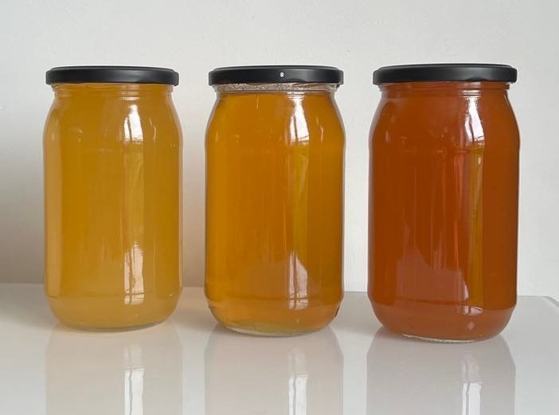
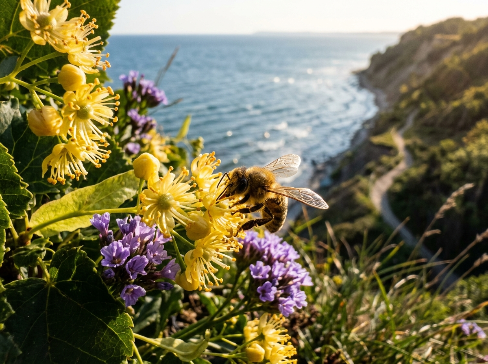

Honey Facts & Frequently Asked Questions
Everything worth knowing about Honeymiood's raw honey: provenance, how it's harvested, how the six varieties differ, and answers to the questions we're asked most.

Where does Honeymiood honey come from?
Our apiary sits in a family garden in Gdynia, right by the Kępa Redłowska Nature Reserve (54°29'N 18°33'E), where the Baltic sea breeze meets flowering lindens, acacias, evening primrose and wild meadows. That coastal flora gives our honeys their distinctive flavour bouquet. The apiary is run today by Jarek — the fourth generation of a family that has kept bees since 1923.
Comparing the Six Honeys
Origin, harvest, flavour profile and consistency for every variety, in one place.
| Variety | Origin | Harvest | Flavour Profile | Consistency |
|---|---|---|---|---|
| Rapeseed | Grandpa Grzegorz's apiary, Gdynia | 2026 harvest | Creamy, delicate taste, light almost white colour | Creamed, thick |
| Acacia | Kępa Redłowska Nature Reserve, Gdynia | 2026 harvest | Floral aroma, liquid and light in colour | Darkens during crystallisation |
| Wildflower | Kępa Redłowska Nature Reserve, Gdynia | 2026 harvest | Floral, cornflower aroma, rich amber colour | Liquid, crystallises over time |
| Linden | Redłowo Beach, Gdynia | 2026 harvest | Velvety, dark resinous hue with a hint of citrus | Long-flowing, thick |
| Rapeseed Honey ~ Golden Milk | Grandpa Grzegorz's apiary, Gdynia | 2026 harvest | Spiced, warming | Creamed |
| Rapeseed Honey with Bee Bread | Grandpa Grzegorz's apiary, Gdynia | 2026 harvest | Creamy, with tiny bee bread particles | Velvety, intense, slightly herbal |
Frequently Asked Questions
Short, concrete answers to the questions we're asked most often.
What makes raw honey different from honey bought in a shop?
Honeymiood's raw honey is never heated above the natural temperature of the beehive, nor is it pressure micro-filtered — two steps common in shop honey that keep it runny for longer but strip out some pollen and change its natural structure. Ours comes from a single harvest, from our apiary by the Kępa Redłowska Nature Reserve in Gdynia.
Why does honey sometimes crystallise?
Crystallisation is a natural process in which the glucose in honey gradually turns solid — a sign that the honey is raw and unfiltered, not that it has spoiled. High-glucose honeys like our rapeseed crystallise quickly, while fructose-rich honeys like acacia stay liquid for months.
Where does Honeymiood honey come from?
Our apiary sits in a family garden in Gdynia, right by the Kępa Redłowska Nature Reserve (54°29'N 18°33'E), where the Baltic sea breeze meets flowering lindens, acacias, evening primrose and wild meadows. That coastal flora gives our honeys their distinctive flavour bouquet.
How do Honeymiood's six honeys differ?
Each honey comes from a different bloom and harvest window: rapeseed is creamy and crystallises fast, acacia stays liquid and pale for many months, linden has a resinous hue with a hint of citrus, and wildflower blends cornflower and evening primrose pollen into one aromatic bouquet. See the full comparison in the table above.
What jar sizes are available?
Most of our honeys come in 320 g and 1000 g jars; Golden Milk and the bee bread honey are sold only in the smaller 320 g jar, given their added spices or bee bread. Orders ship packed in glass-safe protective packaging.
Where can I buy Honeymiood honey in person?
You'll find our honey in selected cafés and bakeries in Gdynia, Warsaw, Toruń and Szamotuły — see the Stockists page for the current address list. Online orders ship directly from the apiary.
Want to see the whole range?
Explore all six honeys, our gift sets, and the full list of cafés and bakeries where you'll find us.
